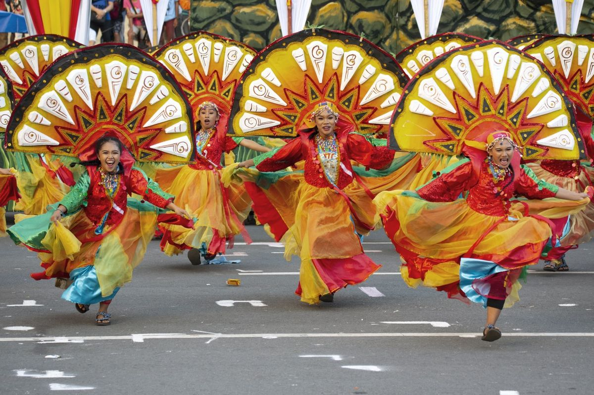
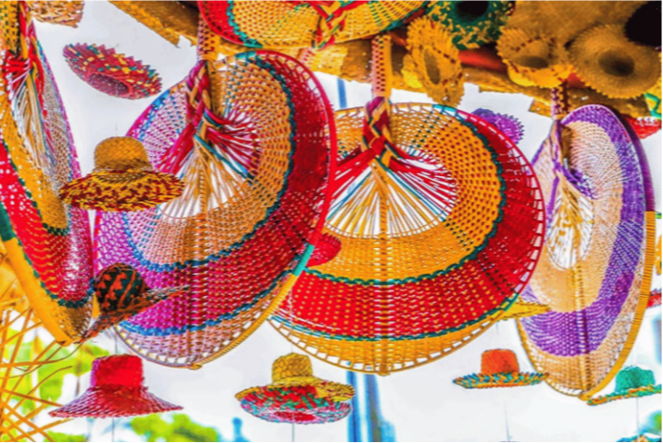
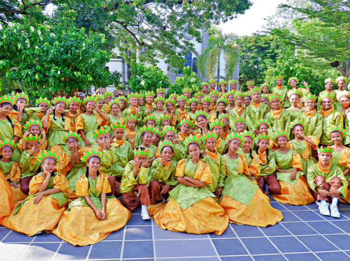
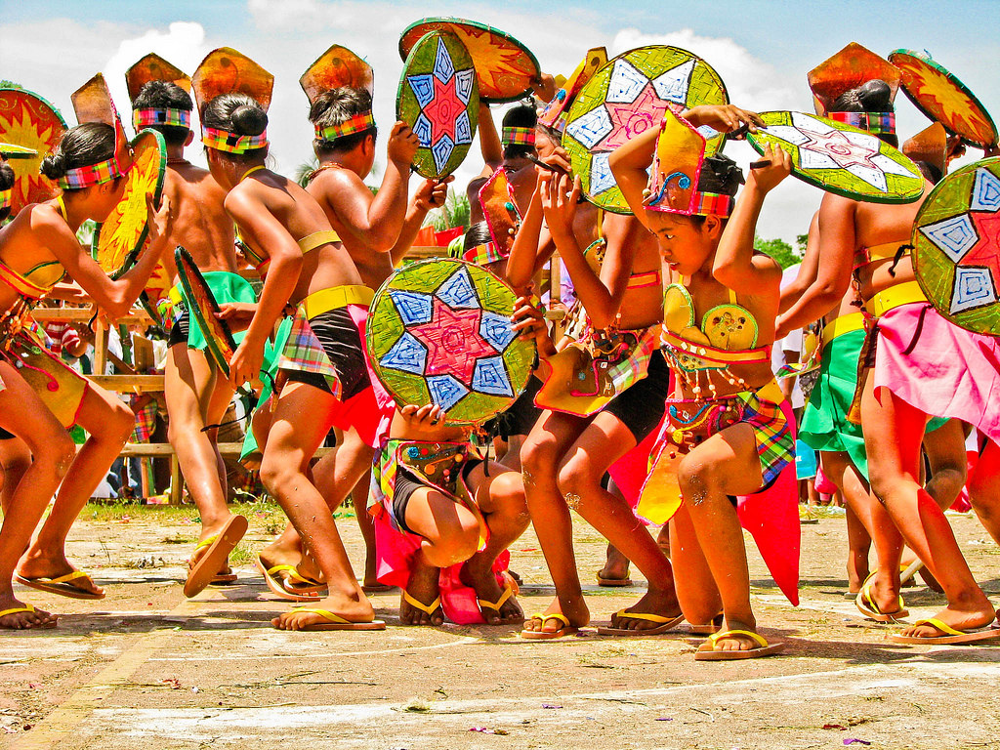

Culture & Celebration
Experience the heart of Isabela through its vibrant festivals and living traditions.

Cauayan City, Isabela
The Bambanti Festival is Isabela's grandest festival and one of the most celebrated provincial festivals in the Philippines. "Bambanti" refers to the scarecrows (called "birds catcher" locally) that stand guard over rice fields — a tribute to the agricultural heart of Isabela. The festival features giant colorful bambanti installations, street dancing competitions, agri-trade fairs, beauty pageants, and cultural shows. Hundreds of performers in vibrant costumes fill the streets, celebrating Isabela's identity as a rice and corn granary of the Philippines.

Palanan, Isabela
Celebrated in the remote and pristine municipality of Palanan, this festival celebrates the region's extraordinary biodiversity and craftsmanship. Events include eco-tours, indigenous cultural performances, traditional crafts exhibits, and environmental awareness programs. Palanan is home to one of the last remaining lowland rainforests in Luzon and the landing site of General Emilio Aguinaldo's historic capture in 1901. The festival promotes sustainable eco-tourism and indigenous Agta culture.

Palanan, Isabela
The Mammangi Festival is a vibrant, week-long celebration held every May in Ilagan City, Isabela, honoring the city's identity as the "Corn Capital of the Philippines" and paying tribute to its hardworking corn farmers (mammangi in the local Ibanag dialect). The festival showcases the city's rich agricultural heritage through colorful street dancing competitions, where performers wear elaborate corn-inspired costumes that depict traditional farming and harvesting practices.

Alicia, Isabela
Held every September in conjunction with the town's founding anniversary, and typically features a spring celebration or localized events. Province-wide celebrations include cultural shows, trade fairs, sports tournaments, civic parades, and various competitions. Local government units showcase their best products and talent. It is a time for Isabeleños to reflect on their shared identity and celebrate the province's progress and achievements through the years.